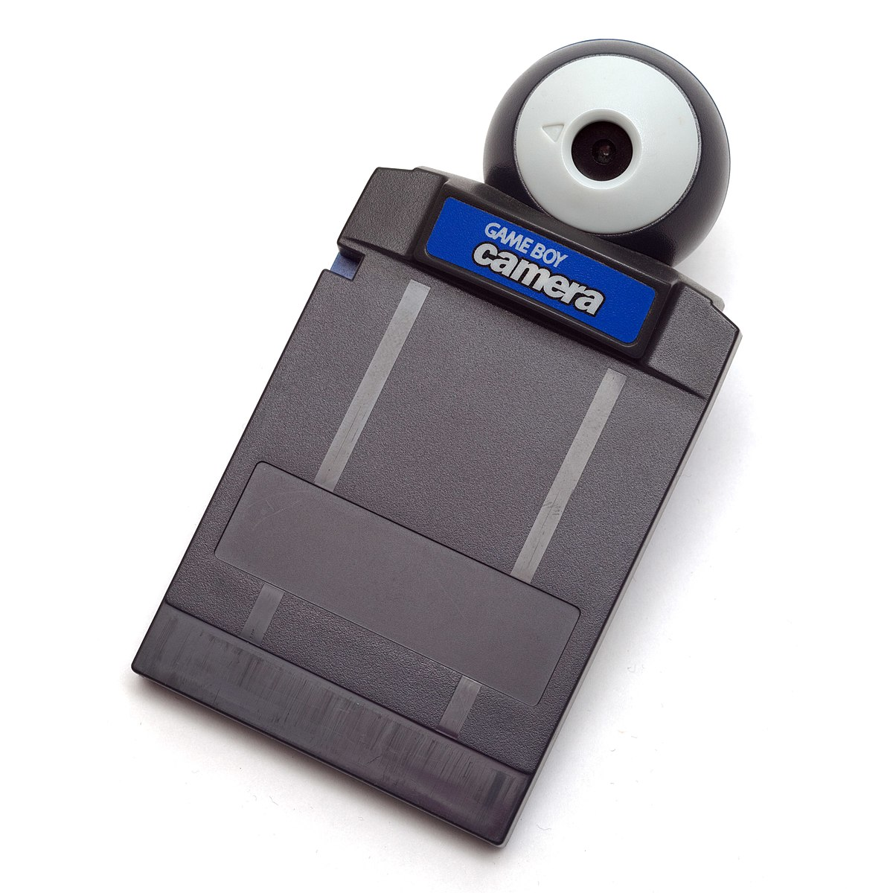

NOTICE:
This section is a WIP, I haven't worked a ton on this project recently but will post more if I get around to working on it
How I came across my gameboy camera
I remember the first time I saw my gameboy camera, I was a senior in high school and was on a trip to the local flea market with some friends. We walked into the only games stall in there at the time, and I looked at the cases of gameboy games on the counter. There were always tons of obscure games that I never cared to try like Rugrats: Go Wild or World Championship Poker. However, one cartridge did catch my eye, the gameboy camera. I loved old tech and was on a big gameboy kick at the time so the idea of taking pictures on my gameboy sounded pretty cool. Somehow though, for that visit and several after I had convinced myself that I didn't need a gameboy camera, that it would just be some useless plastic that I wouldn't get bored of quickly. Every subsequent trip to the flea market though, I would look into that same case and see it still there, unused. After about a years worth of flea market visits I decided: If the camera was there the next time I went to the flea market, I would get it, and so I did.
My inspiration for this project
The moment I had learned about the gameboy camera, I started doing some research on it. At the time, searching up "gameboy camera" yielded this Ironic Sans article: Idea: Color Photos with the Game Boy Camera. See, the gameboy camera is actually only black and white, but the person who wrote this article described a way of getting color pictures. The method of taking color pictures can be read about in more detail in their article, but I will summarize it here. Basically, you take three picutres without moving the camera, and for each picture you hold a red, green and blue filter over the lense. Then you open these pictures up in an image editor and overlay them to produce a colored picture from a black and white camera. I thought this would make for a cool project and so I asked my campus' chapter of the Association of Computing Machinery to buy me some lighting gels, an infrared filter, and a tripod. I had my own gameboy, as well as a gameboy read/write board, so I used those to take the pictures and transfer them to my computer. The parts I needed came but I ended up putting the project on hold for a while as quarantine had just started and I wasn't really motivated to go outside and take pictures.
My first photographs
The following spring semester I had a really easy schedule, and decided to mess around with the camera a little bit. I took my first photo of a TV test pattern that I pulled up on my monitor

I was surprised with the results, I was worried it would appear more washed out like the results on Ironic Sans. The only thing I was a little bit disappointed with was the blurriness near the top edge of the monitor. This was likely due to the fact that I had just taped my gameboy to my desk to take the picture because I hadn't worked out a way to firmly attach it the tripod. Now that I knew you must hold the camera as still as possible, I used the tripod for my next picture.

I took the next picture at night, and has a nice blue/purple color over it. From this image, I learned another valuable lesson with the camera: it needs a lot of light to look decent. However, one thing I did learn from this picture is that when dealing with more light, the camera is much more likely to cast a reflection onto the lighting gel, as seen in the bright patch on the bottom left of the first picture.
Further tests with the tripod
I wanted to experiment a bit with the tripod, so I decided to try and take a panorama of my room. I didn't use the color filters for the pictures though, as I worried the seams would be more evident in color, and I didn't want to have to deal with managing nine images because I was being lazy.

Stuff I still want to try
When I ordered an IR filter for taking pictures outside, I ended up ordering a filter that only lets IR light through, I only recently got the correct filter and so I want to take some colored pictures outside sometime.
I read up some more on taking gameboy camera pictures, and found this article by a guy named Björn, who has some really nice articles on all things gameboy. It reccomends some best practices and strategies for getting good pictures with the gameboy camera. I think it would be cool to see how much I can improve the pictures I'm taking with some of his tips. Björn also has a lot of good pictures taken with the gameboy camera on his instagram, you should check them out!
I also think it would be cool to synthesize all the things I've learned messing with the camera and attempting to make some short stop-motion animations. If I could get a more reliable way to attach the gameboy to the tripod (right now I'm using a bike mount meant to hold your phone) I could confidently take several frames worth of color pictures and make something neat.